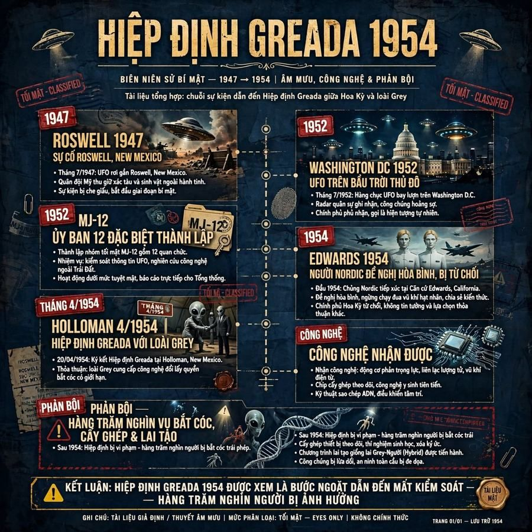
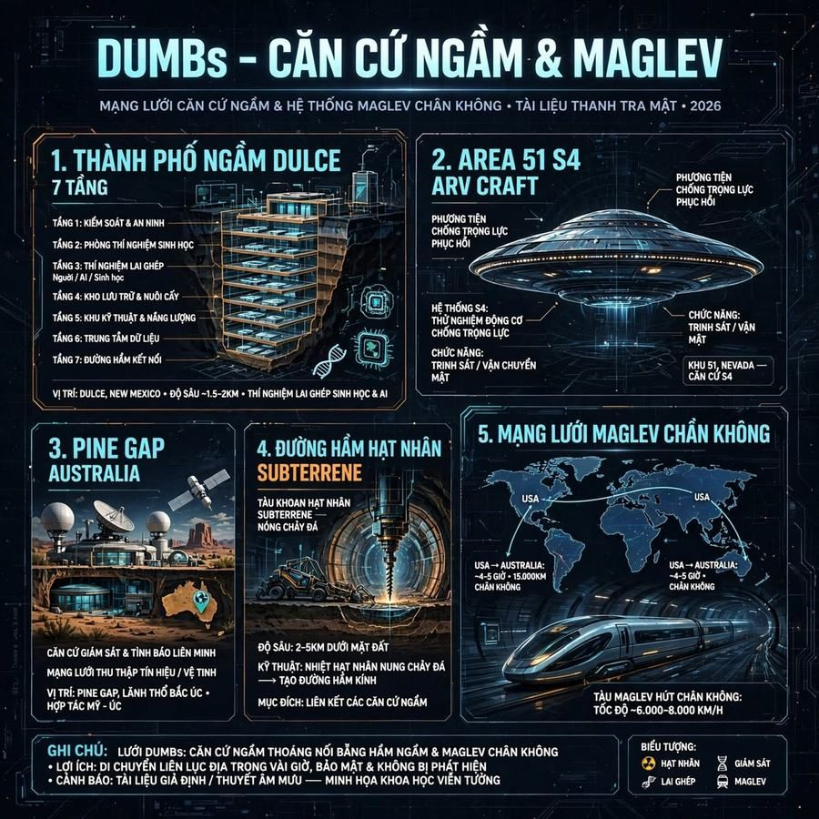
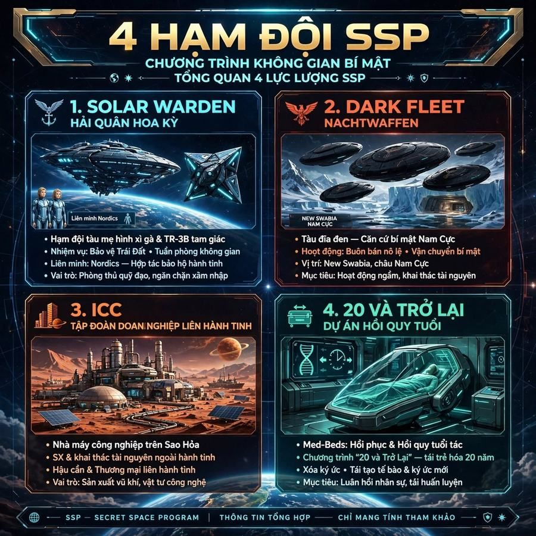

Trang chủ / Chuyên đề 2: Hành Trình Thiên Hà / Kỳ 17
Chuyên đề 2 · Kỳ 17 / 90
HIỆP ĐỊNH GREADA 1954 & SỰ TRỖI DẬY CỦA CHƯƠNG TRÌNH KHÔNG GIAN BÍ MẬT (SSP)

Nếu bạn cho rằng cuộc đua không gian giữa Mỹ và Liên Xô trong thế kỷ 20 chỉ đơn thuần dừng lại ở những con tàu Apollo đổ bộ lên Mặt Trăng hay các trạm vũ trụ bay quanh Trái Đất, thì bạn đã bỏ lỡ một bức tranh lịch sử ngầm vô cùng rùng rợn và vĩ đại.
Bên dưới lớp vỏ che đậy của báo chí và chính trị bề nổi, một nền văn minh ly khai (Secessionist Civilization) đã âm thầm ra đời. Những bản hợp đồng ma quỷ ký kết trong đêm tối, những căn cứ khổng lồ khoét sâu vào lòng đất, và những hạm đội tàu không gian mang công nghệ chống trọng lực đã âm thầm tuần tra khắp Hệ Mặt Trời từ nhiều thập kỷ trước!
Hãy cùng quay ngược thời gian về giữa thế kỷ 20 để giải mã Hiệp định Greada 1954 và Sự trỗi dậy của các Chương trình Không gian Bí mật (SSP)!
✦ ✦ ✦1. BỐI CẢNH SAU THẾ CHIẾN II: SỰ VỠ MỘNG HẠT NHÂN VÀ LÀN SÓNG UFO
Sau khi hai quả bom nguyên tử phát nổ xuống Hiroshima và Nagasaki năm 1945, những sóng xung kích năng lượng hạt nhân không chỉ tàn phá Trái Đất mà còn rạch phá dải tần số không-thời gian quanh hành tinh chúng ta. Tín hiệu báo động đã vang lên khắp Thiên hà: Một chủng tộc mới bước vào kỷ nguyên hạt nhân nhưng lại mang tâm thức chiến tranh cực kỳ hung hãn.
A. Sự can thiệp của các đĩa bay ngoài hành tinh
- Sự kiện Roswell 1947: Sự cố rơi đĩa bay tại Roswell (New Mexico) đã trao vào tay quân đội Mỹ những mảnh vỡ công nghệ chống trọng lực, vi mạch sinh học và các thi thể sinh thể ngoài hành tinh đầu tiên.
- Thâm nhập bầu trời Washington D.C. 1952: Trong hai tuần liên tiếp vào tháng 7/1952, một hạm đội đĩa bay tỏa sáng đã công khai bay lượn trên bầu trời Nhà White House và Tòa nhà Quốc hội Mỹ, vượt qua mọi hệ thống radar và máy bay đánh chặn tối tân nhất thời bấy giờ. Đây là lời cảnh báo và gây áp lực trực tiếp buộc giới lãnh đạo Trái Đất phải ngồi vào bàn đàm phán!
B. Sự hình thành của Ủy ban Bóng tối Majestic 12 (MJ-12)
Để che giấu sự thật với công chúng và độc quyền khai thác các công nghệ giải mã (Reverse-engineering), Tổng thống Harry Truman đã ký lệnh thành lập một tổ chức tình báo siêu mật mang tên Majestic 12 (MJ-12).
Tổ chức này tập hợp các tướng lĩnh quân sự, giám đốc tình báo và các nhà khoa học hàng đầu. MJ-12 được trao quyền lực tuyệt đối: kiểm soát truyền thông, thực hiện các chiến dịch tẩy não công chúng, và sẵn sàng loại bỏ bất kỳ ai có ý định tiết lộ sự thật về sự hiện diện của người ngoài hành tinh.
✦ ✦ ✦
2. CUỘC GẶP BÍ MẬT NĂM 1954: SỰ TỪ CHỐI CỦA NGƯỜI BẮC ÂU
Vào tháng 2 năm 1954, một sự kiện lịch sử mang tính bước ngoặt đã diễn ra tại Căn cứ Không quân Edwards (California). Tổng thống Dwight D. Eisenhower đã bí mật rời khỏi chuyến nghỉ dưỡng để tham gia một cuộc gặp gỡ bí ẩn.
A. Lời đề nghị từ Liên đoàn Thiên hà (Chủng tộc Bắc Âu / Nordic ETs)
Phái đoàn ngoài hành tinh đầu tiên hạ cánh xuống căn cứ là đại diện của Liên đoàn Thiên hà (chủng tộc người Bắc Âu - Nordic). Họ mang đến một thông điệp hòa bình thuần khiết:
- Điều kiện hỗ trợ công nghệ: Họ tuyên bố sẵn sàng giúp nhân loại Trái Đất chữa bệnh, cung cấp công nghệ năng lượng sạch và hỗ trợ nâng cao tần số tâm thức.
- Yêu cầu tối thượng: Chính phủ Mỹ và các cường quốc phải phá hủy hoàn toàn toàn bộ kho vũ khí hạt nhân, chấm dứt các cuộc chiến tranh và cam kết phát triển theo con đường hòa bình.
- Sự từ chối của giới quân sự: Giữa bối cảnh Chiến tranh Lạnh đang căng thẳng, các tướng lĩnh quân sự và tổ chức MJ-12 đã kiên quyết từ chối điều kiện này. Họ không muốn từ bỏ vũ khí hạt nhân vì nỗi sợ hãi mất đi vị thế bá chủ thế giới.

3. HIỆP ĐỊNH GREADA 1954 & NHỮNG ĐIỀU KHOẢN MA QUỶ
Sau khi đẩy lùi lời đề nghị hòa bình của người Bắc Âu, phe bóng tối trong chính phủ Mỹ đã chuyển sang đàm phán với một lực lượng ngoài hành tinh khác — đại diện cho Tập đoàn Xám Nebu (Zeta Reticuli / Eban) và phe Bò sát độc đoán.
Vào tháng 4 năm 1954, tại Căn cứ Không quân Holloman, Hiệp định Greada (Greada Treaty) đã chính thức được ký kết giữa Tổng thống Eisenhower (dưới sự áp đặt của MJ-12) và đại diện phe Xám.
Các điều khoản cốt lõi của Hiệp định Greada:
- Trao đổi Công nghệ Siêu việt: Phe Xám cam kết chuyển giao cho quân đội Mỹ các công nghệ chống trọng lực (Anti-gravity), công nghệ lá chắn plasma, công nghệ tàng hình quang học, vi mạch bán dẫn tiên tiến và công nghệ du hành cổng xoáy.
- Cấp quyền xây dựng Căn cứ Ngầm: Chính phủ Mỹ cho phép phe Xám và Bò sát thiết lập các căn cứ nghiên cứu ngầm sâu dưới lòng đất tại các vùng lãnh thổ cô lập.
- Quyền trích xuất tài nguyên sinh học: Phe Xám được phép tiến hành các cuộc bắt cóc con người và gia súc với số lượng "có hạn chế" để phục vụ cho các nghiên cứu sinh học, với điều kiện phải hoàn trả nạn nhân an toàn, xóa sạch ký ức và cung cấp danh sách báo cáo định kỳ cho MJ-12.
Sự bội ước nhanh chóng của Phe Xám
Chỉ trong vòng một vài năm sau khi ký kết, MJ-12 bàng hoàng nhận ra họ đã sập vào một cái bẫy quy mô lớn. Phe Xám hoàn toàn phớt lờ các cam kết:
- Chúng tiến hành hàng trăm ngàn cuộc bắt cóc con người trên khắp thế giới mà không hề gửi danh sách báo cáo.
- Chúng cấy ghép các thiết bị vi mạch điều khiển (Implants) vào cơ thể nạn nhân, trích xuất mẫu gen để thực hiện chương trình lai tạo di truyền quy mô lớn (Hybridization Program) nhằm cứu vãn dòng gen đang bị thoái hóa của chính chúng và âm thầm thâm nhập kiểm soát xã hội Trái Đất từ bên trong!

4. MẠNG LƯỚI CĂN CỨ NGẦM DUMBs VÀ CÔNG NGHỆ TỐI THƯỢNG
Để phục vụ cho Hiệp định Greada và cất giấu các dự án thử nghiệm công nghệ bị đánh cắp, một mạng lưới các Căn cứ Quân sự Ngầm Siêu sâu (Deep Underground Military Bases - DUMBs) đã được xây dựng rầm rộ trên khắp hành tinh.
A. Những "Thành phố ngầm" khổng lồ
- Căn cứ Dulce (New Mexico): Căn cứ 7 tầng ngầm khùng khiếp, nơi diễn ra các cuộc thí nghiệm lai tạo di truyền dị hợm giữa gen người và gen Bò sát/Xám. Nơi này từng bùng nổ một cuộc đụng độ súng đạn đẫm máu vào năm 1979 giữa lực lượng đặc nhiệm Mỹ và sinh mệnh Bò sát ngầm.
- Khu vực 51 (Area 51 / S4): Trung tâm giải mã và bay thử nghiệm các đĩa bay ngoài hành tinh (ARV - Alien Reproduction Vehicles).
- Pine Gap (Úc): Căn cứ điều khiển sóng tần số và giám sát vệ tinh ngầm khổng lồ do liên minh Mỹ - Anh vận hành.
B. Hệ thống Giao thông Tàu đệm từ (Maglev Trains)
Nằm sâu từ 2 đến 5 km dưới mặt đất là một mạng lưới đường hầm khổng lồ được đào bằng tàu đào hầm năng lượng hạt nhân (Nuclear Subterrene) — công nghệ sử dụng nhiệt độ cực cao để làm tan chảy đá thành thủy tinh nhẵn mịn.
Hệ thống tàu điện đệm từ trường siêu tốc di chuyển trong môi trường chân không nối liền tất cả các căn cứ DUMBs trên thế giới, cho phép di chuyển từ Mỹ sang Châu Âu hay Úc chỉ trong vòng vài giờ đồng hồ!
✦ ✦ ✦5. SỰ PHÂN PHÁI CỦA CÁC CHƯƠNG TRÌNH KHÔNG GIAN BÍ MẬT (SSP)
Từ nguồn ngân sách đen khổng lồ (Black Budget) trích ra từ buôn bán ma túy quốc tế, rửa tiền và giao dịch tài chính ngầm, các Chương trình Không gian Bí mật đã phát triển vượt bậc, phân tách thành nhiều hạm đội với các chức năng hoàn toàn khác nhau:
1. Hạm đội Solar Warden (Chiến thần Mặt Trời)
- Nguồn gốc & Liên minh: Được thành lập bởi Hải quân Mỹ vào cuối những năm 1970 và chính thức đi vào hoạt động đầu những năm 1980. Solar Warden liên minh chặt chẽ với Liên đoàn Thiên hà (chủng tộc Bắc Âu).
- Nhiệm vụ: Hạm đội sở hữu hàng chục tàu mẹ hình điếu xì-gà dài hàng cây số và các tàu chiến hình tam giác (như dòng TR-3B). Nhiệm vụ chính của Solar Warden là tuần tra vùng không gian Hệ Mặt Trời, bảo vệ Trái Đất khỏi sự xâm lược của các hạm đội tiêu cực ngoài hành tinh.
2. Hạm đội Đen (Dark Fleet / Nachtwaffen)
- Nguồn gốc: Rễ gốc của Hạm đội Đen xuất phát từ nền văn minh ly khai của Đức Quốc Xã vào thập niên 1930–1940. Nhờ sự hỗ trợ công nghệ từ chủng tộc Bò sát Ciakahrr thông qua các buổi cầu cơ của Xã hội Vril, Đức Quốc Xã đã xây dựng các căn cứ bí mật tại Nam Cực (New Swabia).
- Bản chất tiêu cực: Hạm đội Đen hoạt động hoàn toàn phục vụ cho tham vọng chinh phạt của Đế chế Bò sát. Họ sở hữu các tàu chiến hình chóp nón nón đĩa màu đen hung hãn, có căn cứ tại vùng tối của Mặt Trăng, Sao Hỏa và tham gia trực tiếp vào mạng lưới buôn bán nô lệ sinh học liên thiên hà.
3. Tập đoàn Công nghiệp Liên hành tinh (ICC - Interplanetary Corporate Conglomerate)
- Cường quốc tư nhân ngầm: ICC được điều hành bởi một liên minh các tập đoàn quốc phòng, hàng không vũ trụ và tài chính bóng tối (bao gồm các gã khổng lồ công nghiệp).
- Đế chế công nghiệp trên Sao Hỏa: ICC nắm giữ công nghệ chế tạo tối tân nhất. Họ xây dựng hàng trăm nhà máy, xưởng đóng tàu không gian và thuộc địa khai thác khoáng sản trên Sao Hỏa, Vành đai Tiểu hành tinh và các vệ tinh của Sao Thổ. ICC coi con người Trái Đất bị bắt cóc như một nguồn lực lao động nô lệ phục vụ sản xuất.
4. Chương trình "20 and Back" (20 Năm và Trở về)
Để duy trì lực lượng nhân sự cho các dự án SSP mà không làm lộ bí mật với xã hội bề nổi, một công nghệ y khoa - tâm thần cực kỳ tinh vi đã được áp dụng:
- Tuyển dụng & Phục vụ: Các nhân sự tài năng trong quân đội hoặc các chương trình đặc biệt được ký hợp đồng phục vụ 20 năm trong không gian.
- Công nghệ Lùi tuổi (Age Regression) & Xóa ký ức: Sau 20 năm chiến đấu hoặc làm việc trên các căn cứ Sao Hỏa, nhân sự sẽ được đưa vào các buồng y tế tần số (Med-Beds) để đảo ngược sinh học về đúng độ tuổi 18–20 ban đầu.
- Sau đó, ký ức 20 năm của họ bị xóa bỏ bằng công nghệ sóng từ trường, và họ được đưa trở lại dòng thời gian Trái Đất đúng vào thời điểm vài phút sau khi họ rời đi!
6. SỰ PHÁT GIÁC, SỰ LY KHAI VÀ TIẾN TRÌNH GIẢI MẬT TOÀN CẦU
Sự thao túng của phe bóng tối và các thỏa thuận ma quỷ không thể kéo dài mãi mãi. Sự rạn nứt sâu sắc đã bùng nổ ngay trong nội bộ các Chương trình Không gian Bí mật:
A. Sự ra đời của Liên minh SSP (SSP Alliance)
Nhận thấy sự tha hóa tàn nhẫn của ICC và Hạm đội Đen, nhiều sĩ quan và chiến binh thuộc hạm đội Solar Warden cùng các thành phần thức tỉnh trong ICC đã đứng lên thành lập Liên minh SSP (SSP Alliance).
Họ quyết định quay súng chống lại phe bóng tối, liên minh với Liên đoàn Thiên hà và các Đấng Sáng Lập để chiến đấu cho sự tự do và giải phóng nhân loại!
B. Chiến dịch quét sạch các căn cứ DUMBs
Trong những năm gần đây, một cuộc chiến ngầm khủng khiếp đã diễn ra âm thầm bên dưới chân chúng ta. Lực lượng Liên minh Trái Đất kết hợp với Liên đoàn Thiên hà đã tiến hành quét sạch các căn cứ DUMBs, giải cứu hàng ngàn nạn nhân bị giam giữ trong các hầm ngầm Dulce, Nam Cực và bẻ khóa các mạng lưới máy tính kiểm soát.
Những trận động đất nông bất thường (độ sâu 10km) liên tục diễn ra trên khắp thế giới trong thời gian qua chính là kết quả của các vụ nổ phá hủy hệ thống căn cứ ngầm này!
✦ ✦ ✦7. BÀI HỌC VÀ TƯƠNG LAI CỦA NHÂN LOẠI TRÊN TRÁI ĐẤT
Màn che đậy kéo dài gần một thế kỷ đang tan vỡ từng ngày. Những công nghệ bị giấu kín trong các dự án SSP — năng lượng miễn phí (Free Energy), buồng chữa lành tần số Med-Beds, công nghệ làm sạch môi trường và du hành siêu thanh — chuẩn bị được giải mật và trao lại cho nhân loại!
- Sự giải phóng nhận thức: Khi sự thật về các Chương trình Không gian Bí mật được công bố hoàn toàn, con người Trái Đất sẽ nhận ra rằng chúng ta chưa bao giờ bị giới hạn bởi nhiên liệu hóa thạch hay sự khan hiếm tài nguyên.
- Bước vào Kỷ nguyên Thiên hà: Khi Trái Đất hoàn tất tiến trình nâng tần số lên 5D, nhân loại sẽ chính thức chấm dứt kỷ nguyên vô minh, bước ra vũ trụ với tư cách là một nền văn minh tự do, đại diện cho di sản 22 mã gen rực rỡ!
Sau khi các căn cứ ngầm bị dọn dẹp và các hạm đội tiêu cực bị đánh lùi, sự thức tỉnh của các con tàu cổ Space Arks dưới lòng băng Nam Cực và đại dương hiện nay đang diễn ra như thế nào? ✦